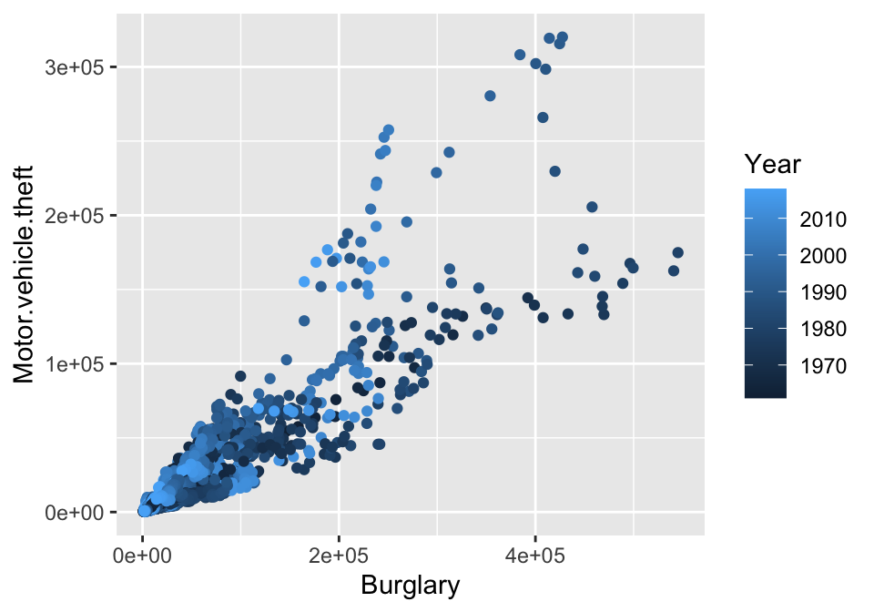

DS 202: Graphics with ggplot2
Xiongtao Dai
Explore data with ggplot2
Why ggplot2
- Wildly popular package for statistical graphics: over 27 million downloads from CRAN from 2015 (almost 20 thousand times per day).
- Ported to Python
- Developed by Hadley Wickham (An ISU alumni, COPSS Presidents’ Award receipient)
- Designed to adhere to good graphical practices
- Supports a wide variety plot types and extensions
- Constructs plots using the concept of layers
Grammar of Graphics
A graphical representation (plot) consists of:
- mappings (
aes): data variables are mapped to graphical elements (x- and y-coordinate, color, shape, …)
- layers: geometric elements (
geoms, such as points, lines, rectangles, text, …) and position adjustments (e.g. jitter points, side-by-side histograms)
- scales: the mapping from data space to values in an aesthetic space (e.g. axis transformation; low value–blue, high value–red)
- coordinate system (
coord): normally Cartesian, but pie charts use polar coordinates
- facetting: for multiple plots (according to subsets) and their arrangement
- theme: fine-tune display items, such as font and its size, …
We will be using the ggplot2 framework for plotting
Getting ready
Load libraries:
library(ggplot2) # not found? run install.packages("ggplot2")
library(classdata) # not found? run devtools::install_github("xdaiisu/classdata")
ggplot Function
The ggplot function is the basic workhorse of ggplot2
- Produces all plot types available with ggplot2
- Allows for plotting options within the function statement
- Creates an object that can be saved
- Plot layers can be added to modify plot complexity
ggplot Structure
The ggplot function has the basic syntax:
ggplot(data, mappings) + geom_type(options)
- data: dataset to be used
- mappings: determines which variables are used for the x- and y-axis, color, linetype, etc. Done with
aes()
- type: determines type of the plot, e.g.
point, line, bar
- options: there are so, so many options!
Example: Scatterplots in ggplot2
aes allows us to specify mappings; scatterplots need a mapping for x and a mapping for y:
ggplot(data = fbiwide, aes(x = Burglary, y = Murder)) +
geom_point()

Aesthetics
Can map other variables to size, color, shape, ….
ggplot(aes(x = Burglary, y = Motor.vehicle.theft,
color=Year), data=fbiwide) + geom_point()
